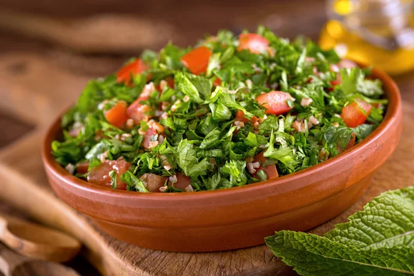

Tabouli is one of the most refreshing mezes out there. It’s the perfect healthy, light summer food to cool you down. It’s mostly fresh parsley which gives it the beautiful dark green color. It uses bulgur which is whole wheat. The addition of freshly chopped tomatoes and lemon add acidity. This tabouli recipe is delicious by itself, but even more amazing with fresh pita bread to scoop it up. I also love putting it in a falafel pita with hummus too.